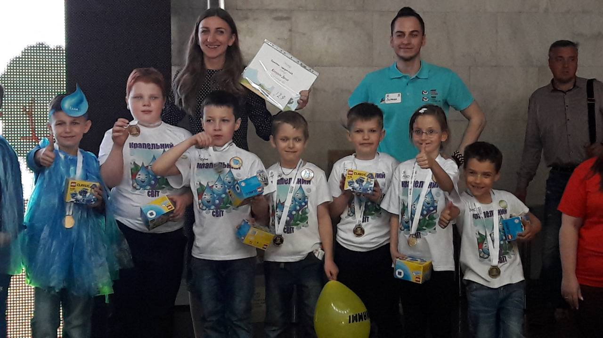
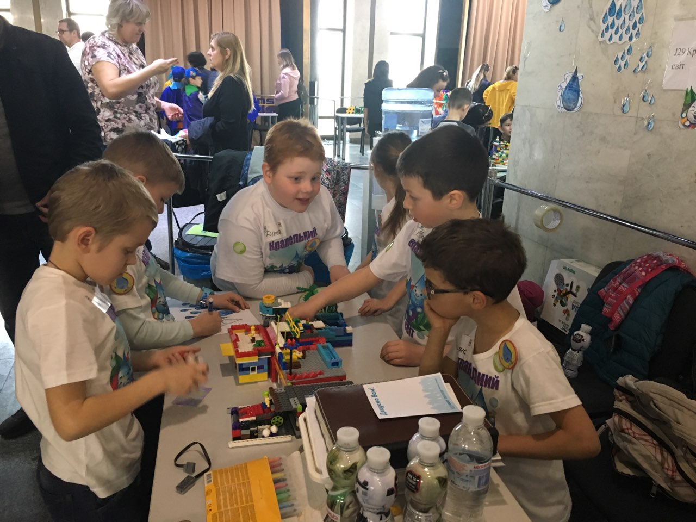
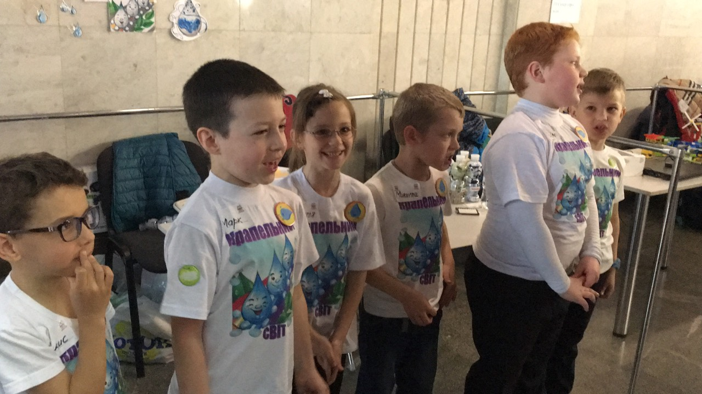
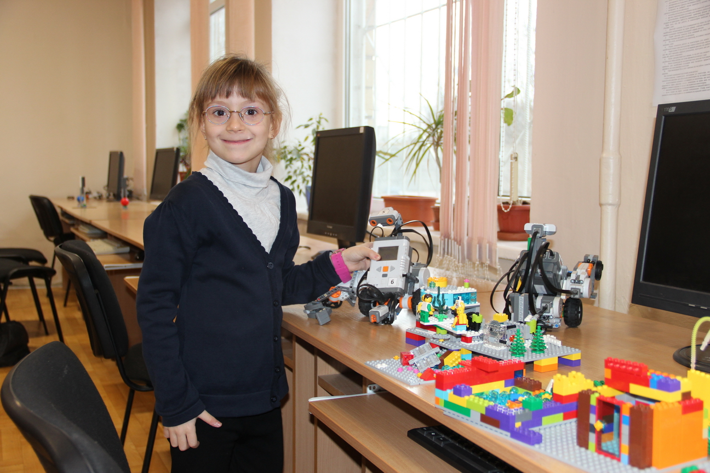

ПЕДАГОГІЧНА ДІЯЛЬНІСТЬ
Загально середня освіта
1991-2002 рр. СЗШ№52 м.Києва, срібна медаль 03126, м. Київ, вул. М. Донця, 16, Телефон: (044) 497-20-55 school52.kiev.uaВища освіта
2002-2007 рр. НПУ ім. Драгоманова, спеціальність – викладач технічних дисциплін 01601, м.Київ, вул. Пирогова, 9 Телефон: (044) 234-11-08 shef-npu@ukr.netДруга вища освіта
2007-2009 рр. Інститут перепідготовки та підвищення кваліфікації НПУ ім. Драгоманова за спеціальністю “Психологія” 01601, м.Київ, вул. Пирогова, 9 Телефон: (044) 234-11-08 shef-npu@ukr.netBrain Basket Foundation


Особливості проекту:
♦ Навчальні програми базуються на курсах кращих світових університетів (Harvard, MIT, Stanford) і дають розуміння основ програмування та знайомлять з найбільш популярними мовами програмування (C, Python, JavaScript, HTML/CSS)
♦ Заняття проходять у форматі змішаного навчання (онлайн+оффлайн), що передбачає самостійну роботу з лекційним матеріалом, який викладений онлайн, і аудиторну практику під керівництвом досвідчених менторів на базі навчальних хабів
♦ Курс триває 4 місяці, аудиторні заняття проходять двічі на тиждень у робочі дні з 19:00 до 20:30
♦ Освітні хаби розташовані в усіх обласних центрах України
♦ Навчання є безкоштовним
Участь у роботі шкільної предметно-методичної комісії, районної та міської
Педагогічна діяльність
Впродовж 2014-2015 н.р. проводила відкриті уроки з експериментального курсу «Робототехніка» для вчителів інформатики – слухачів курсів підвищення кваліфікації Інституту післядипломної педагогічної освіти Київського Університету ім. Бориса Грінченка.
В 2016-2017 навчальному році приймала участь у міському конкурсі на присвоєння освітніх грантів в категорії «Перспектива освіти».
Виступ на педрадах, нарадах, семінарах
Починаючи з 2013 р. приймаю участь у семінарах вчителів інформатики та математики, а також у виставках «Інноватика в сучасній освіті».
У 2017-2018 навчальному році організувала на базі школи міський семінар для вчителів інформатики на тему: «Досвід вчителів спеціалізованої школи №52 у викладанні інформатики в умовах сучасного світу». Також цього року виступала на районному семінарі, організованому НМЦ Солом’янського району на тему: «Інформаційна безпека школяра в умовах сучасного світу».
Авторські, індивідуальні програми, творчі роботи міні-підручники, посібники
- Прописи для молодших школярів
- Електронний підручник для 7 та 8 класу
- Розробка уроків з курсу “Основи робототехніки” для учнів 5-9 класів
- Розробка інтерактивних уроків з курсу “Початкова робототехніка”
Навчально-матеріальна база
Виготовлення:
- таблиць;
- схем;
- макетів;
- виконання робіт на огляд творчості;
- оформлення кабінетів;
- стендів;
- інформаційних куточків
Гурток з робототехніки
Як керівник гуртка «Робототехніка» маю гарну технічну базу для підготовки учнів до олімпіад та конкурсів, постійно оновлюючи новими ТЗН (технічними засобами навчання)




Участь у творчих професійних конкурсах
Брала участь в конкурсі «Учитель року-2013», посіла І місце і представляла район на міському конкурсі і здобула ІV місце.
2016-2017 навчальному році була в конкурсі «Учитель року - 2016» в якості журі